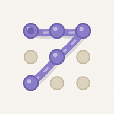

Privacy
Your threads stay with you
Ariane collects no data
All the information entered in the app (devices, patterns, criteria, settings) is stored exclusively on your phone and never leaves it.
It is encrypted with AES-256-GCM by the iOS system. The encryption key is kept in the iPhone's secure Keychain.
No third-party services
The app contains no user account, no advertising, no analytics or audience measurement tool, and no third-party service. It makes no network requests.
Face ID and notifications
Face ID or the device passcode is used only, on your phone and through the system API, to protect the display of the recovered pattern. Ariane never has access to your biometric data.
Reminders are local notifications, scheduled on your phone. No server is involved.
Deletion and contact
Deleting the app permanently deletes all of its data.
For any question about this policy:
martin.cornumansuy@gmail.comLast updated: November 2026.
Confidentialité
Tes fils restent chez toi
Ariane ne collecte aucune donnée
Toutes les informations saisies dans l'application (appareils, schémas, critères, réglages) sont stockées exclusivement sur ton téléphone et ne le quittent jamais.
Elles sont chiffrées en AES-256-GCM par le système iOS. La clé de chiffrement est gardée dans le trousseau sécurisé de l'iPhone.
Aucun service tiers
L'application ne contient ni compte utilisateur, ni publicité, ni outil d'analyse ou de mesure d'audience, ni service tiers. Elle n'effectue aucune requête réseau.
Face ID et notifications
Face ID ou le code de l'appareil servent uniquement, sur ton téléphone et via l'API du système, à protéger l'affichage du schéma retrouvé. Ariane n'a jamais accès à tes données biométriques.
Les rappels sont des notifications locales, programmées sur ton téléphone. Aucun serveur n'intervient.
Suppression et contact
Supprimer l'application supprime définitivement toutes ses données.
Pour toute question sur cette politique :
martin.cornumansuy@gmail.comDernière mise à jour : novembre 2026.